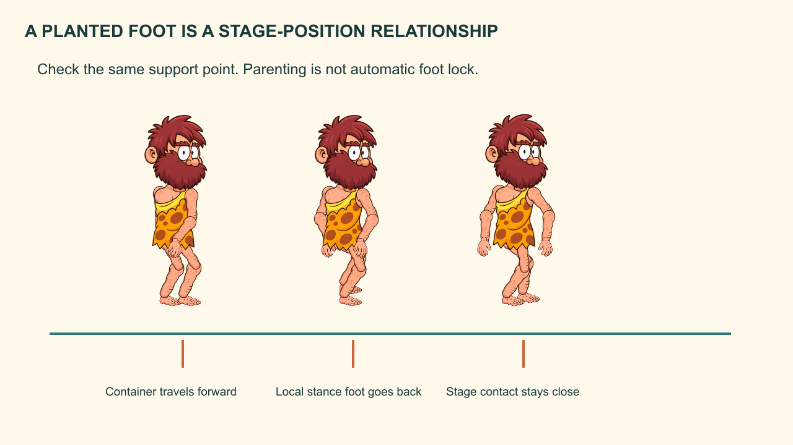

Eight designed poses for a 24-frame cycle. The optional construction endpoint at 25 is not an extra loop hold.
The Caveman and the Third Stone
Create a readable walk cycle and stage it without obvious foot sliding.
Workbook 4 of 8 · two provisional sessions
My supports
Turn on any help you want. Your teacher may have set some for you. They change how the guide helps, not what is assessed.
Continue the same film
Open your selected production FLA from Workbook 03, then File → Save As → Caveman_04_walk.fla. Carry forward all three Scenes and the entire Library. Keep repair/director copies separate, then return to the chosen production version. Do not begin a fresh blank project.
Your production job
Create a readable walk cycle and stage it without obvious foot sliding.
Notes and checked stages stay in this browser when storage is available. They are not submitted, graded or shared with school apps. Read aloud uses the browser voice; teacher recordings have not been supplied.
Restore uses the JSON recovery file from this workbook. The readable text file is for review only. Download before changing device. Keep personal information out of practice notes.
How animators work
Block the meaning, test the action, refine the transition and keep a revision trail. A smooth result still needs readable intention, believable contact and a clear delivery.
Understand before you move
A walk alternates support. The body moves over a planted foot while the other leg swings forward.
The eight design poses are contact, down, passing and up, then the opposite leg repeats them. In a 24-frame cycle use poses at 1, 4, 7, 10, 13, 16, 19 and 22. A matching pose at 25 can help construct the seam, but the repeating export/loop contains frames 1–24 so the endpoint is not held twice.
Predict the result of today’s main action, then test that prediction in Animate.
Evidence of understanding
We look for the finished action, an observed repair and a brief explanation using your own timeline.
Independent director condition: After retrieving the stone, the Caveman takes a careful departure walk along the far bank before the return-to-cave cut. Adjust stride, balance and hand contact; do not put a third-stone carry before he has acquired it.
Defence: Point to the supporting foot and show how its world position stays consistent during stance.
Support settings help access the same task. They do not lower the success criteria. School outcome/assessment registration remains for the teacher to confirm.
Session 1 · Lesson 1
Build and understand
Provisional 70-minute session: a short explanation, four guided stages, then a check. Actual classroom timing needs a cold run.
TODAYCreate a readable walk cycle and stage it without obvious foot sliding.
01
Mark support before moving parts
IN SHORTBoth contact poses have clear foot placement and opposite leg arrangements.
READ ALOUD
DOCUMENT: Caveman story · Workbook 04 · main Scene or named action as stated below SELECT: A new Walk_24 Graphic; guide layer above the character. TOOLS / ROUTE: Timeline keys; guide line; Onion Skin.
Draw a ground guide and mark hip height. Add a contact reference at frame 1 and opposite contact at frame 13.
Name the supporting leg at each key. Put the feet on the same ground plane and make the forward/back separation readable.
Use near/far identity consistently. The near leg does not become the far layer when it travels behind the other leg.
STEP CHECKLIST
GLOSSARY
contact pose: A key moment when a foot meets the ground.
stance: The phase in which a foot supports weight on the ground.
WHYSupport and identity must stay coherent through the cycle.
CHECKBoth contact poses have clear foot placement and opposite leg arrangements.
FIXIf legs switch visual identity, restore their original layer names and use depth ordering consciously.
WORKED EXAMPLE · DIFFERENT OBJECTA table does not change which leg it is when viewed from another angle; limb identity stays consistent too.
STRETCH (AFTER THE CHECK PASSES)Record a short observation of your own walk without collecting anyone else’s image.
Method basis: A1 · A2. Values and sequence are authored for this project.
02
Build down, passing and up
IN SHORTThe swing foot clears the ground and the body height changes are restrained and rhythmic.
READ ALOUD
DOCUMENT: Caveman story · Workbook 04 · main Scene or named action as stated below SELECT: Walk_24 frames 4, 7 and 10; then 16, 19 and 22. TOOLS / ROUTE: Insert Keyframe on all part layers; Free Transform.
At frame 4 lower the hips slightly and bend the supporting knee. At 7 bring the swing foot past the support leg with toe clearance. At 10 raise the hips slightly as the support heel lifts.
At frames 16, 19 and 22 repeat these jobs with opposite legs. Keep head movement smaller than hip movement.
Counter-swing the arms: the arm opposite the forward leg comes forward. Avoid identical rotations on both sides.
STEP CHECKLIST
GLOSSARY
passing pose: The swing leg passes the supporting leg.
up pose: The higher body position as support approaches push-off.
WHYThe rise and fall comes from support mechanics; it is not a random vertical bob.
CHECKThe swing foot clears the ground and the body height changes are restrained and rhythmic.
FIXIf knees pop backward, inspect the joint bend direction and add a passing breakdown with a clear knee shape.
WORKED EXAMPLE · DIFFERENT OBJECTA two-legged toy looks weightless if its torso never responds to support changes.
STRETCH (AFTER THE CHECK PASSES)Make the proud Caveman’s chest slightly lead while keeping the pelvis balanced.
Method basis: A1 · A2. Values and sequence are authored for this project.
03
Fill the cycle and inspect the seam
IN SHORTNo pause or snap occurs at the loop boundary.
READ ALOUD
DOCUMENT: Caveman story · Workbook 04 · main Scene or named action as stated below SELECT: The gaps between the eight design poses. TOOLS / ROUTE: Insert Keyframe; Onion Skin; loop playback.
Add the required in-between poses or short classic spans between the designed keys. Check feet and knees on every frame where interpolation is used.
Create a matching frame 25 temporarily to compare with frame 1. Compare pose and movement direction across 22→24→1.
Keep a separate 25-frame construction copy. If a classic span ends at 25, bake that span to frame-by-frame through 24 before removing the construction endpoint, or manually key 23 and 24. The final loop contains frames 1–24 with no duplicate endpoint hold.
STEP CHECKLIST
GLOSSARY
cycle: A repeatable motion sequence.
loop seam: The transition from the final frame back to the first.
WHYA cycle must join in both pose and rhythm; matching only the first and last picture is not enough.
CHECKNo pause or snap occurs at the loop boundary.
FIXIf there is a hitch, remove a duplicate contact hold or repair spacing across the boundary. Do not hide the seam under a camera cut before diagnosing it.
WORKED EXAMPLE · DIFFERENT OBJECTA rotating wheel can have identical endpoint pictures but still pause if both are held in the loop.
STRETCH (AFTER THE CHECK PASSES)Test two consecutive cycles with the ground guide visible.
Method basis: A1 · A2. Values and sequence are authored for this project.
04
Stage the approach in Crossing
IN SHORTLeg motion and overall travel work together, and the Caveman reaches the bank rather than crossing the gap during the walk.
READ ALOUD
DOCUMENT: Caveman story · Workbook 04 · main Scene or named action as stated below SELECT: Main Scene Crossing; Character layer. TOOLS / ROUTE: Library → drag Walk_24 instance; Graphic → Loop; main timeline keys.
Place a Walk_24 Graphic on the near bank and set Loop. Give the main Scene enough frames for three cycles: 72 frames at 24 fps.
Move the action container from a starting point to the near-bank stopping point using keys at 1 and 73 as construction endpoints. Right-click the intervening span and Create Classic Tween, then inspect the travel and Graphic playback. Bake through frame 72 before replacing the construction endpoint at 73 with Stop, so the final tween does not lose its endpoint.
Keep overall scale constant during the walk. Do not translate a flattened still and call it a walk cycle.
STEP CHECKLIST
GLOSSARY
nested animation: An action timeline placed inside another timeline.
screen translation: Movement of the action container across the Stage.
WHYThe inner action supplies articulation; the outer motion supplies travel across the scene.
CHECKLeg motion and overall travel work together, and the Caveman reaches the bank rather than crossing the gap during the walk.
FIXIf the inner action freezes, check Graphic Loop and parent timeline length. If it races, inspect the fps and duplicated endpoint.
WORKED EXAMPLE · DIFFERENT OBJECTA bicycle wheel rotates inside a bicycle that also travels across the screen.
STRETCH (AFTER THE CHECK PASSES)Compare a slow cycle with short travel against a fast cycle with long travel.
Method basis: A1 · A2. Values and sequence are authored for this project.
Session 2 · Lesson 2
Refine, repair and direct
Provisional 70-minute session: a short explanation, four guided stages, then a check. Actual classroom timing needs a cold run.
TODAYCreate a readable walk cycle and stage it without obvious foot sliding.
05
Match stride and travel to reduce sliding
IN SHORTThe support toe stays close to its guide mark until lift-off while the hips pass over it.
READ ALOUD
DOCUMENT: Caveman story · Workbook 04 · main Scene or named action as stated below SELECT: A visible ankle/toe point during the stance half-cycle. TOOLS / ROUTE: Onion Skin; frame-by-frame preview; guide marks.
Mark the supporting toe on the Stage at the start of stance. Advance several frames and compare its world position, including the outer container movement.
For the worked 24-frame cycle, at an unrotated 100% outer scale, a 12-frame stance with about 43 pixels of outer travel needs about 43 pixels of backward local foot travel to keep that foot planted. These are adjustable starting values, not universal anatomy. At 50% outer scale, about 86 local pixels produce 43 Stage pixels; judge the final Stage contact directly.
Adjust the local foot path, outer travel or stride duration together. Keep the foot at ground height through stance; lift it during swing.
STEP CHECKLIST
GLOSSARY
local position: A position within the action symbol.
world/Stage position: The final position after parent transforms are included.
foot slip: Unintended movement of a supposedly planted foot.

Local foot movement and outer travel must agree during stance. Schematic comparison; assess actual Stage contact in playback.
WHYA planted foot is a relationship between local leg motion and overall travel. Parenting alone does not lock it.
CHECKThe support toe stays close to its guide mark until lift-off while the hips pass over it.
FIXIf it drifts forward, reduce outer speed or increase backward local foot motion. If it drifts backward, do the reverse. Recheck the other leg.
WORKED EXAMPLE · DIFFERENT OBJECTA treadmill walker moves feet backward locally while staying in one place globally.
STRETCH (AFTER THE CHECK PASSES)Measure slip in pixels over a stance and reduce it through one justified adjustment.
Method basis: A1 · A2. Values and sequence are authored for this project.
06
Give the walk a motivated stop
IN SHORTThe Caveman visibly judges the gap before preparing the jump.
READ ALOUD
DOCUMENT: Caveman story · Workbook 04 · main Scene or named action as stated below SELECT: End of approach on the near bank. TOOLS / ROUTE: Create a named 12-frame Graphic Stop from the neutral template; local keys and holds.
Create a Graphic named Stop with 12 local frames. Match local frame 1 to the final walk contact, shorten the final step, then plant the support foot before settling hips/chest over it. Use this named action at Crossing frames 73–84 in the worked assembly.
Let the arms finish their swing after the main body slows. Turn the head toward the far-bank stone.
Hold the assessment pose briefly before jump anticipation begins. The stop must not overlap an accidental looping walk frame.
STEP CHECKLIST
GLOSSARY
follow-through: A smaller continuation after the main action slows or stops.
WHYStopping needs a transfer of weight and a reason; an abrupt frozen cycle reads as an error.
CHECKThe Caveman visibly judges the gap before preparing the jump.
FIXIf a foot pops, choose a compatible contact pose as the hand-off and repose the transition. Do not change the whole character’s scale to reach the ground.
WORKED EXAMPLE · DIFFERENT OBJECTA runner’s arms and clothing can finish moving after the feet stop.
STRETCH (AFTER THE CHECK PASSES)Make a cautious stop and a confident stop with the same endpoint.
Method basis: A1 · A2. Values and sequence are authored for this project.
07
Repair one measured slip
IN SHORTThe repaired support point moves less while the body still reaches the intended stop.
READ ALOUD
DOCUMENT: Caveman story · Workbook 04 · main Scene or named action as stated below SELECT: A duplicate approach with deliberately excessive outer travel. TOOLS / ROUTE: Main timeline travel key; guide marks; before/after export.
Increase outer travel enough to create an obvious slide. Mark the support toe at three stance frames.
Restore plausible travel or revise the local stance path. Keep the cycle length unchanged for this comparison.
Retain three before/after toe positions and state which relationship you changed.
STEP CHECKLIST
GLOSSARY
constraint: A relationship that must be maintained, such as foot contact.
WHYThe repair shows whether you can diagnose the nested motion rather than just polish its appearance.
CHECKThe repaired support point moves less while the body still reaches the intended stop.
FIXIf one foot improves but the other worsens, check the opposite half-cycle and consistent stride lengths.
WORKED EXAMPLE · DIFFERENT OBJECTA rolling wheel slips if its rotation and travel distance disagree.
STRETCH (AFTER THE CHECK PASSES)Add a heel-to-toe roll while preserving the support-point logic.
Method basis: A1 · A2. Values and sequence are authored for this project.
08
Direct the carrying walk
IN SHORTThe prop stays held and the walk reads as careful under the same story goal.
READ ALOUD
DOCUMENT: Caveman story · Workbook 04 · main Scene or named action as stated below SELECT: Your director action duplicate; stone attached by deliberate placement. TOOLS / ROUTE: Pose keys; hand/prop layers; main scene travel.
After pickup, keep the stone held close while the Caveman walks carefully along the far bank. Reduce stride or hip bounce and revise balance rather than only changing playback speed.
Check hand-to-stone contact on every designed pose and stance-foot contact during travel.
Save and reopen. Explain one performance change and one contact repair, then use the carrying version only for the optional far-bank departure after pickup. Retain the empty-handed approach before the jump.
STEP CHECKLIST
GLOSSARY
secondary action: A supporting action that enriches the main action without obscuring it.
WHYCarrying changes body mechanics and intention; it requires a new performance decision.
CHECKThe prop stays held and the walk reads as careful under the same story goal.
FIXIf the prop floats, key it with the carrying hand or place it in the appropriate shared container and verify that relationship.
WORKED EXAMPLE · DIFFERENT OBJECTIndependent task: use support, contact and silhouette criteria without a supplied carrying cycle.
STRETCH (AFTER THE CHECK PASSES)Add a brief glance at the stone while preserving safe foot placement.
Method basis: A1 · A2. Values and sequence are authored for this project.
Before you submit
Student QA.
Evidence conversation
Keep it short and specific.
SENTENCE FRAMES
At frame ___, I chose ___ so the viewer could ___. The problem was caused by ___. I changed ___ and checked ___. Under the changed condition, I revised ___ because ___.
Figures marked Illustration are drawn, not screenshots. Step values are starting points authored for this project. Draft for teacher review; not yet classroom-piloted.